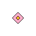
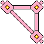
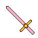
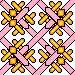

何のひねりもないただのアイテム。
キャンディスティック 10000キャンディ
キャンディを加工し、研磨をしたもの。

エナジーキューブ 50000キャンディキャンディ秒間生産量が+0.1
キャンディを凝縮し、無限のエネルギーを放出できるようにしたアイテム。価値が非常に高い。
キャンディワンド 60000キャンディ
キャンディ秒間生産量が+0.1
無限のエネルギーで魔法攻撃をしていた武器。
ダブルキューブ・キャンディワンド 110000キャンディ
キャンディ秒間生産量が+0.2
キャンディワンドが進化し、エナジーキューブが2つ搭載されていた武器。

キャンディワンド・ブーメラン 180000キャンディキャンディ秒間生産量が+0.3
ダブルキューブ・キャンディワンドが進化し、エナジーキューブが3つ搭載され、魔法攻撃と物理攻撃の両方を可能とした武器。
超絶キャンディワンド改・ターボ 260000キャンディ
キャンディ秒間生産量が+0.4
キャンディワンドの頂点。
ワールドエンド・キャンディワンド 660000キャンディ
キャンディ秒間生産量が+0.8
もう一方の選択肢が解放される。
世界の終わりに...

キャンディソード 60000キャンディキャンディ秒間生産量が+0.1
無限のエネルギーで物理攻撃をしていた武器。
デュアル・キャンディソード 120000キャンディ
キャンディ秒間生産量が+0.2
キャンディソードが進化し、二刀流となった武器。
超絶キャンディソード改・ターボ 220000キャンディ
キャンディ秒間生産量が+0.4
キャンディソードの頂点。

ワールドエンド・キャンディソード 860000キャンディキャンディ秒間生産量が+1.6
もう一方の選択肢が解放される。
世界の終わりに...